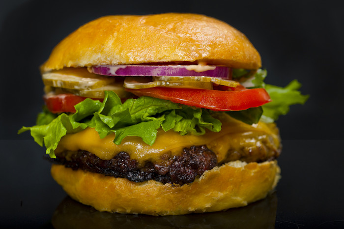

Basic crepes recipe

All-American Cheeseburger has certain non-negotiable elements: American cheese is one of them.
than unwrap individual singles, get sliced cheese from your nearest deli counter —
it tastes better and melts slower and more evenly. Dill pickle chips, sliced red onion and tomato, crisp
lettuce leaves, ketchup and mayo are also involved.
Ingredients
- 2 pounds freshly ground meat
- 1 tablespoon onion powder
- 1 teaspoon salt
- 1 teaspoon freshly ground black pepper
- slices deli-counter American cheese
- 6 large burger buns, preferably homemade, toasted if desired
To garnish
- ketchup
- mayonnaise
- thousand island dressing
- sliced red onion
- sliced tomatoes
Directions
- grab a large bowl, mix ground beef, onion powder, salt and pepper
until just combined. Do not overmix, or your patties will be tough.
- Divide into six portions and form patties, without pressing too hard. They should be uniform in thickness.
Smooth out any cracks using your fingers.
Make these right before you grill them, so they stay at room temperature.
- your grill, grill pan or cast-iron skillet to high heat and add burger patties. If using a grill, cover
with the lid.
- until the crust that forms on the bottom of the burger releases it from the pan or grate — about 2 minutes.
Gently test, but don't flip it until it gets to this point. When burgers lift up easily,
flip, add two slices of cheese to each, close lid if using a grill,
and cook on the other side for another 2-3 minutes for medium to medium rare.
- burgers with a sturdy metal spatula and transfer to a plate. Allow to rest for several minutes, then
transfer to buns.
Garnish as desired and serve immediately.